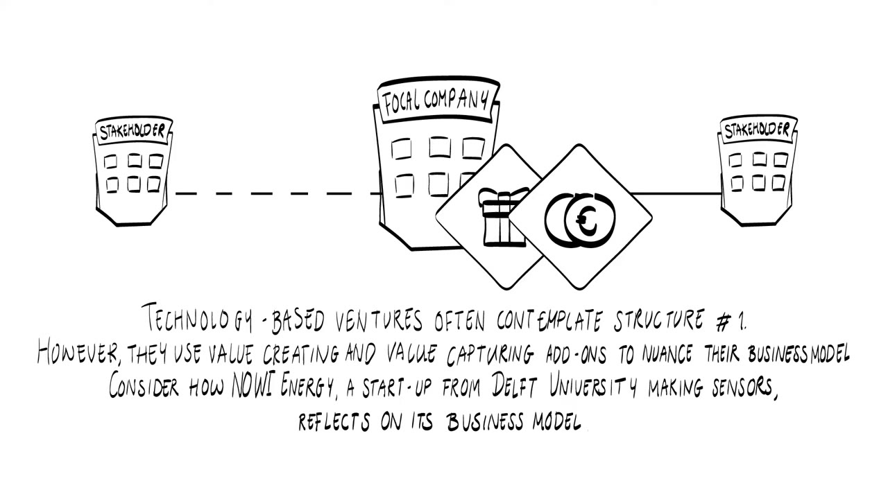
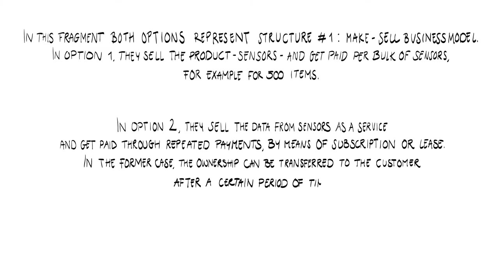
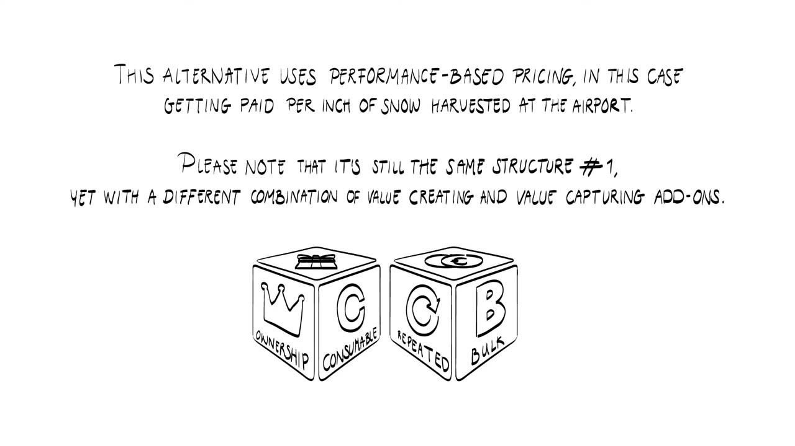
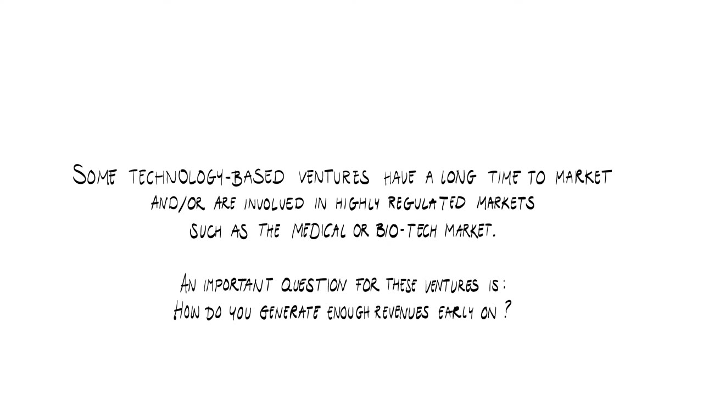

Who is speaking
This video applies lecture 5 to real ventures. Technology-based ventures often contemplate structure number one, the make-sell business model. They then use value-creating and value-capturing add-ons to nuance it. Between the interview fragments, handwritten cards translate what was just said into the lecture's vocabulary.
- NowiStart-up from Delft University that makes sensors. The video calls it Nowi Energy.
- Henk ArntzFounder of Snocom, a TU/e venture that builds snow clearing equipment for airports.
- Ruben van VreelandCo-founder of Bitsensor, a TU/e venture selling security as a service.
- Tide MicrofluidicsUniversity of Twente venture working on ultrasound contrast agents.


Nowi: sell the sensor or sell the data
The entrepreneur from Nowi sees two possibilities. The first is to sell the product, as most sensor makers do. That makes sense for a lot of companies, but it leaves the customer with a big upfront investment. Someone who wants to deploy 5,000 or 10,000 sensors in a large office building, at maybe 40 or 50 euros each, is spending a significant amount.

The second possibility is a newer trend, still at a very early stage: a subscription or lease in which the company offers data. Nowi handles everything attached to the sensors and guarantees that the customer gets the data they need. The price could be, for example, 2 euros per room.
Nobody wants sensors. Sensors themselves are not interesting. They want the data that the sensors generate, because that's what is helping them control their buildings better.
This is still a new proposition in that market, so Nowi is testing how much traction it generates and what people like or dislike about it.
What the commentary makes of it
Both options are structure number one, make-sell. In option one Nowi sells the product and gets paid per bulk of sensors, for example for 500 items. In option two it sells the data from the sensors as a service and gets paid through repeated payments, by means of a subscription or lease. The commentary adds a note on ownership: the venture can retain ownership of the sensors, and ownership can be transferred to the customer after a certain period of time.


Deciding what not to offer
It is also important to make conscious choices about what the venture does not want to offer. Nowi sells the data and leaves out the algorithms needed to analyze it. The customer gets a web API with access to all the data, and from there another company that specializes in analysis takes over. Nowi wants to stay close to its core strength, which is technology development.
Snocom: the market tells you
Henk Arntz, the founder of Snocom, reflects on the same two options. For equipment, Arntz says, the most logical thing is to sell it. Another possibility is a lease. Which one is more beneficial is always determined by the customer. In Snocom's position a direct sale was best, because that was the preference of an airport. Later it turned out that some other airports wanted a lease. Then you offer a lease too, and you make that work.

So the market tells you what your business model should be.
The commentary sums up the two main options as selling the product versus leasing the service, and shows which add-ons each one combines.

A third option: pay per inch of snow
Besides a direct sale and a lease, Arntz also thought about a service-based or performance-based fee. In Snocom's field that was not going to work in Europe, because the customers do not want it that way. In the United States it exists: contractors are paid to clean the snow, and they are paid per inch of snow. Out of that fee they have to perform the work.
That would make Snocom a contractor, though, where it is an original equipment manufacturer. A contractor needs the equipment in the company and a lot of people to do the work. It is a completely different business model, and it would not work for a startup. Arntz concluded very quickly that Snocom is a technology firm and not a contractor.


Bitsensor: which metric to price on
The metrics used in a performance-based business model are extremely important and depend on the context. Ruben van Vreeland, co-founder of Bitsensor, explains which pricing metrics the company considered for its security-as-a-service business model.

There were many ways to price it. Bitsensor could charge per hack, per successful attack, or per attack on the customer's application. It could charge for the hours it saves an analyst who studies these events before or after a breach. If a company is hacked and only has logs available, it could charge per gigabyte. The most transparent metric they saw was per application instance. When you scale a company you want to stick with one metric for a while and build the company around it, so that is the one they use.
What testing the metrics taught them
They tested pricing per hack and per successful hack, per gigabyte of data put into the application, and per analyst using the Bitsensor dashboard. This kind of pricing turned out to be very flexible: a customer could pay 0 euros one month and 50,000 euros the next. The people who buy the product do not like that. They want to know what they will spend on Bitsensor this year and next year.
Per-hack pricing had a second problem, because the seller could influence the number.
The feedback that we got is: so you hack us now, you hack us a hundred times, and then we pay you a hundred times.
The customer cannot know that Bitsensor is not behind those attacks, and the two are supposed to fight for the same goal. Pricing per application instance avoided this. Everybody in the business knew the metric. It scales: a customer with double the number of application instances pays about double, with a little discount. And customers can foresee how the number of instances will grow, since it is closely correlated with the growth of their users. Van Vreeland says it is a metric that feels safe for them.
Tide Microfluidics: revenue before the hospital
Some technology-based ventures have a long time to market, or operate in highly regulated markets such as medical or biotech. For them the question is how to generate enough revenue early on.


Tide Microfluidics makes medical technology, and it takes time before you are allowed to sell that to a hospital. The company had to find a different route. It identified the preclinical market and the research market as its first target group and started selling products to researchers.
These researchers want to create ultrasound contrast agents for all kinds of tests. Some are developing new medical procedures and new imaging algorithms to improve ultrasound. Others work on the next generation of contrast agents, which are loaded with a medicine. You can then see where the medicine is in the body and release the drug when it arrives at the right location. All of that is still research, and Tide has the technology to produce such agents.

It generates revenue for us. At the same time we learn from our users. We get feedback to speed up the development towards the medical market.
Terms to know
- Make-sell with add-ons
- Every model in this video keeps the make-sell structure. What changes is the combination of value-creating add-ons (ownership or access, consumable or durable) and value-capturing add-ons (one-time or repeated, item or bulk).
- Sell the product versus lease the service
- The two main options for a venture that makes equipment. Nowi and Snocom both weigh them, and both let the customer's preference decide.
- Performance-based pricing
- Getting paid for a result, such as per inch of snow harvested at an airport. It is still the make-sell structure.
- Pricing metric
- The unit a performance-based or service price is counted in, such as per hack, per gigabyte or per application instance. The video calls these metrics extremely important and context-dependent.